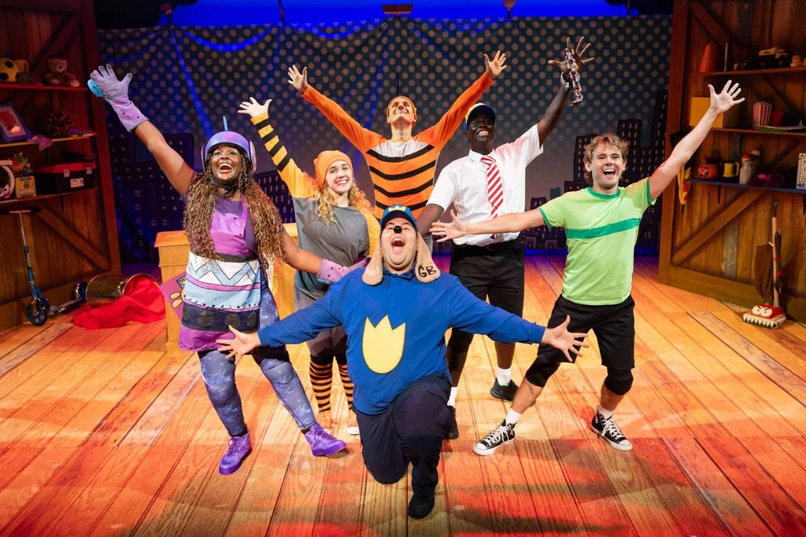

Our Family Verdict
From Comic Strip to Stage!
Reviewed by James, age 9
I went to see Dog Man: The Musical at Wolverhampton Grand Theatre . I’m a huge fan of the books and the movie, so I was really excited to see what it would be like on stage.
I thought they did a brilliant job of making it feel like a Dog Man comic had come to life. The scenery was one of my favourite things. It was colourful and looked like it had been made out of cardboard, with funny props and comic style designs everywhere. It made the whole show feel really playful and fun, especially because it was designed to look homemade, like it was created from things they could find from their parent’s garage.
Fans of the book series will notice the show has parts of different Dog Man stories put together into one big adventure, so there was always something happening. It made the show feel really action-packed.
There was comedy and chaos happening all the time, but that's exactly what I wanted from a Dog Man show. Dog Man is half-dog and half-cop, so there were lots of dog jokes about butt-sniffing, wet sloppy kisses and general doggy chaos!
Lots of the key characters from the books are in the show including Petey, Li'l Petey, 80-HD, Flippy and beasty buildings!
Petey was one of my favourites because he was really funny even though he was trying to be evil. He had lots of cat-like characteristics. The whole cast had so much energy. There were only six actors, but they had to do loads of different parts, including moving scenery and singing, dancing and barking. They were all brilliant!
I really liked the songs. There were some really catchy ones that got stuck in my head afterwards.
ADHD SENSORY
I also liked how the show celebrates being different and thinking differently. As someone with ADHD, I like that ADHD is part of the Dog Man stories and is connected to creativity and having lots of ideas. George and Harold wouldn't make such brilliant comics if they didn't think differently. I agree that sometimes the things that make you different can actually be your superpowers.
One thing I was a little nervous about was whether there would be a really loud explosion. Loud noises can make me nervous at theatre shows because you don't always know when they're coming. I really liked the “KA-BOOM!” umbrella. It looked like a comic-book style explosion, and because I could see it coming, I knew a small noise was about to happen. I thought that was a really clever and funny way of doing an explosion on stage.
I also thought it was just the right length for a kids' show. There was loads happening, but it didn't feel too long, and I never got bored.
My favourite thing was probably that they didn't try to make Dog Man too serious. It was colourful, silly, energetic and completely bonkers, just like the books.
If you love Dog Man, I would definitely recommend seeing it. It really does feel like the comic strip has jumped onto the stage!
4 out of 5 stars!
Mum's Notes:
As a parent, I thought this was a brilliant introduction to musical theatre for young Dog Man fans. The six-person cast worked incredibly hard, with strong vocals and huge amounts of energy throughout, and the colourful comic-book staging kept the children engaged.
I particularly loved the homemade feel of the production. The cardboard scenery and inventive props captured the feeling of children putting on their own show with whatever they could find, which felt very true to the spirit of Dog Man.
For families with children who are sensitive to sudden loud noises, I would recommend bringing ear defenders.
Overall, it was a fun, silly and joyful family show and a lovely way to bring a much-loved comic series to life on stage.